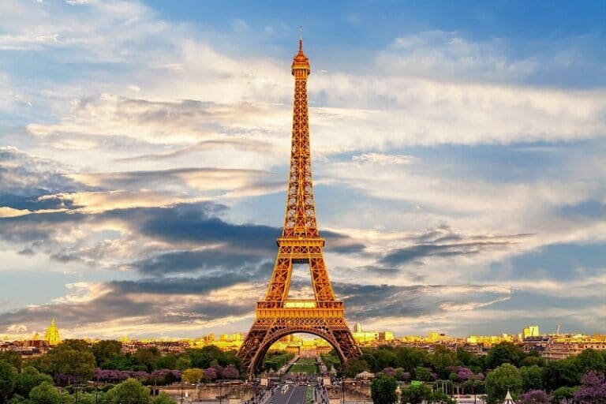
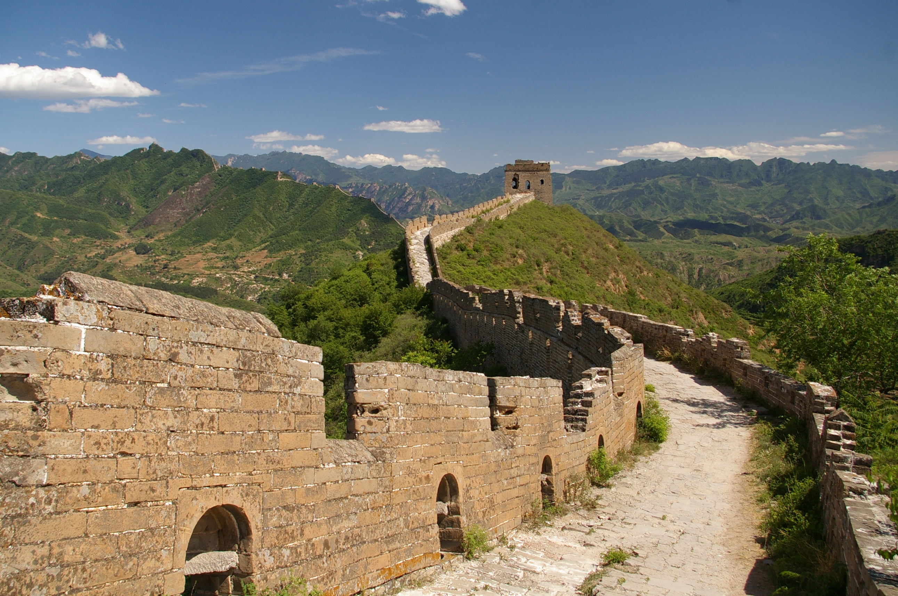
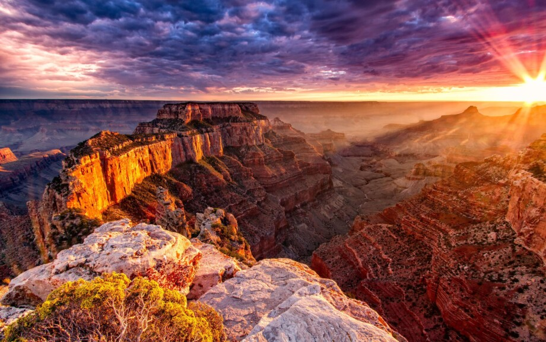

Цікаві місця для відвідування
Ейфелева Вежа
Іконічна пам'ятка Парижа та Франції, відома у всьому світі.
Велика Китайська Стіна
Давній захисний мур в Китаї, який тягнеться більш ніж на 13,000 миль і є однією з Нових семи чудес світу.
Гранд-Каньйон
Монументальний природний каньйон у штаті Арізона, США, який вражає своїми розмірами та красою кольорових скель.
